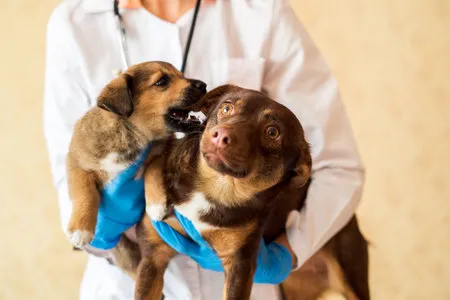
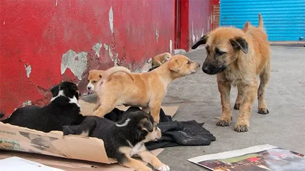
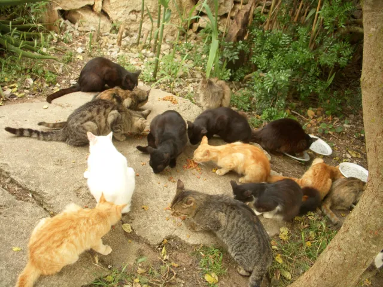

Huellas salvadas
Animales que ya encontraron hogar gracias a tu apoyo. Cada uno tiene nombre e historia.

Toro y Canela
Rescatados en Villa Lugano en condición crítica, pasaron 3 meses en nuestra clínica. Hoy viven juntos en Palermo con la familia Rodríguez.
Ver historia
Coco y Zuri
Encontrados en una obra en construcción, esta dupla inseparable fue adoptada por una familia en Villa Devoto (CABA) que no podía elegir solo uno.
Ver historia
Pacientes de enero
En enero rescatamos 12 animales en una sola semana. Todos recibieron atención completa. 10 de ellos ya tienen familia.
Ver historiaCasos urgentes 🚨

Cachorros de Bajo Flores
Mamá y 4 cachorros encontrados en la calle. Necesitan vacunas, desparasitación y alimento por 2 meses.

Negra – Cirugía de cadera
Negra fue atropellada en Quilmes. Necesita cirugía ortopédica urgente. Los fondos cubren la operación y recuperación.

Colonia de gatos – Rosario
25 gatos de una colonia en Rosario necesitan castración masiva para frenar la reproducción.